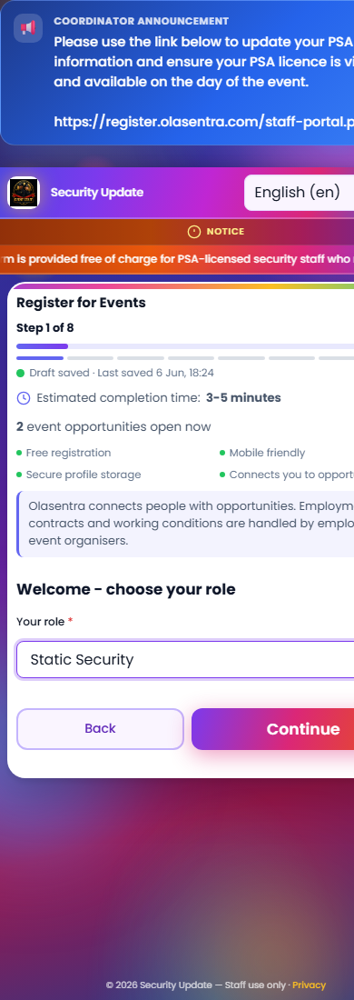
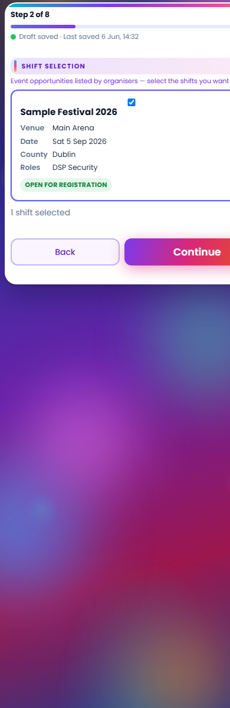
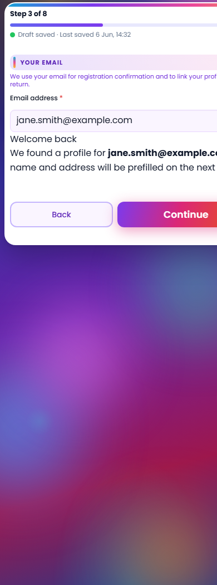
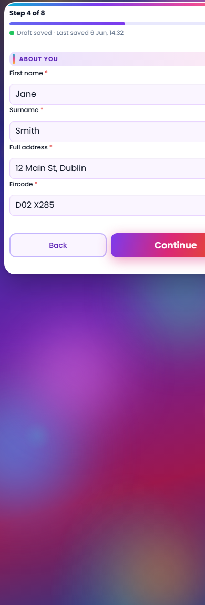
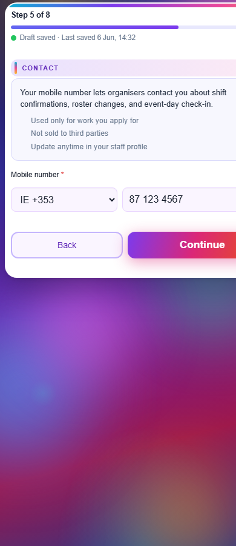
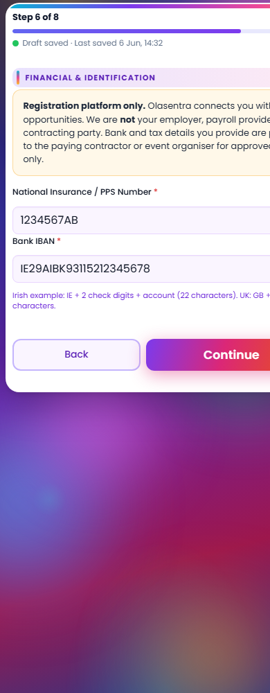
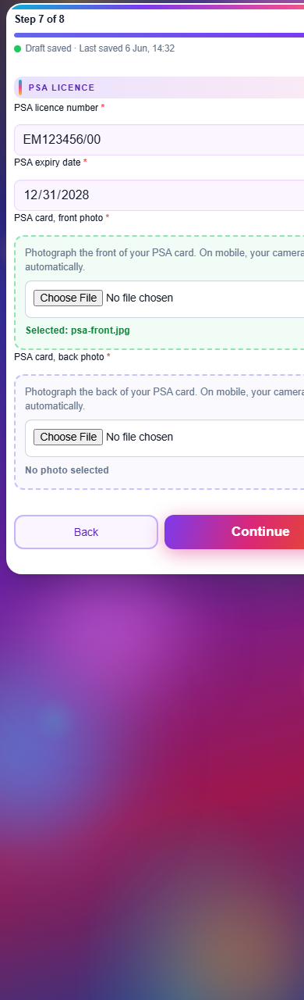
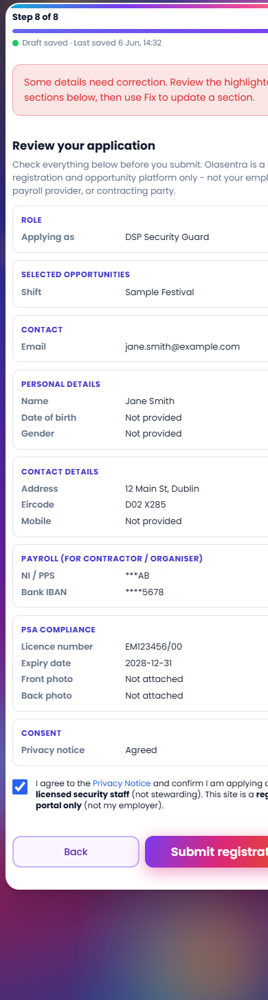

Overall: PASS — 13 passed, 0 failed (1 warn)
feature_registration_wizard_v2 was enabled on production, verified live, rolled back and re-enabled. Wizard remains ON for production traffic. Further Phase A work (A.7+) may proceed after review of this report.
| Check | Status | Detail |
|---|---|---|
| Enable feature_registration_wizard_v2 | PASS | cron/wizard-flag-toggle.php?action=enable — flag = 1 |
| Hard refresh / live HTML | PASS | data-wizard-mode="1" on index.php |
| All 8 step panels in HTML | PASS | 18 reg-wizard__step elements (titles + panels) |
| Wizard assets deployed | PASS | registration-wizard.css/js + autosave + validation linked, HTTP 200 |
| Progress shell Step 1 of 8 | PASS | reg-wizard__step-label visible in live HTML |
| Step 1 screenshot (live index.php) | PASS | Progress bar, role picker, Continue/Back nav |
| Steps 2–8 screenshots | PASS | 8 mobile PNGs captured from production domain |
| Step 8 review summary | PASS | Role, shifts, contact, personal, payroll, PSA, consent sections render |
| Full registration → submit.php | PASS | e2e-live-wizard-20260606182111@olasentra-e2e.test |
| Rollback (flag OFF) | PASS | data-wizard-mode="0", 0 wizard panels |
| Re-enable after rollback | PASS | Wizard left ON for production |
| verify-wizard-production.ps1 | PASS | 10 OK / 0 FAIL |
| Analytics API probe | WARN | 403 without valid CSRF (expected for unauthenticated ping; not a flag issue) |








cron/wizard-flag-toggle.php?key=…&action=enable|disable|statuspowershell -File .\scripts\wizard-go-live-verify.ps1 -SkipDeploypowershell -File .\scripts\capture-production-wizard-screenshots.ps1